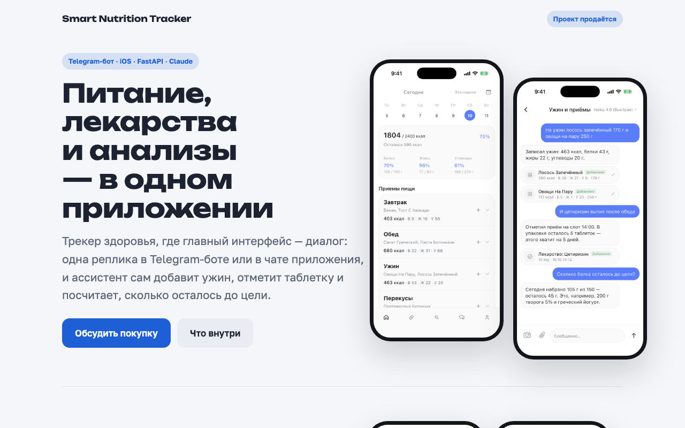

Проекты
Кирилл Тимофеев

汉语中心
Платформа для изучения китайского: колоды с интервальным повторением, словарь с порядком черт и MCP-сервер, через который Claude ведёт занятия.
Открыть визитку →
Smart Nutrition Tracker
Трекер питания, лекарств и анализов, где записи вносятся репликой в чат: Telegram-бот, iOS-приложение и MCP-сервер, через который Claude ведёт дневник.
Открыть визитку →